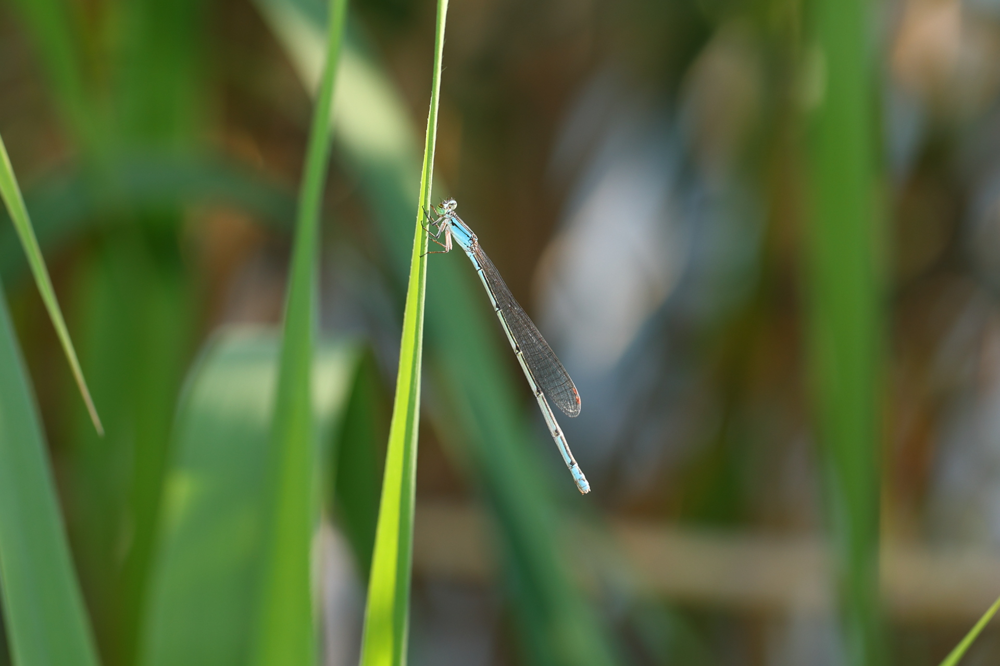
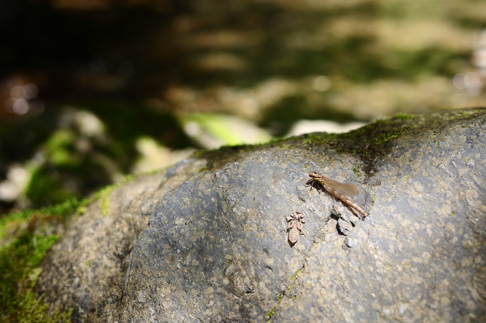
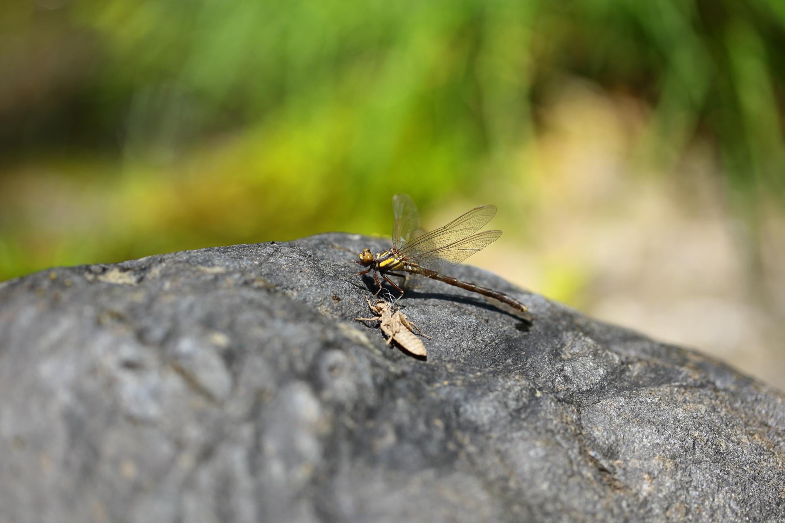
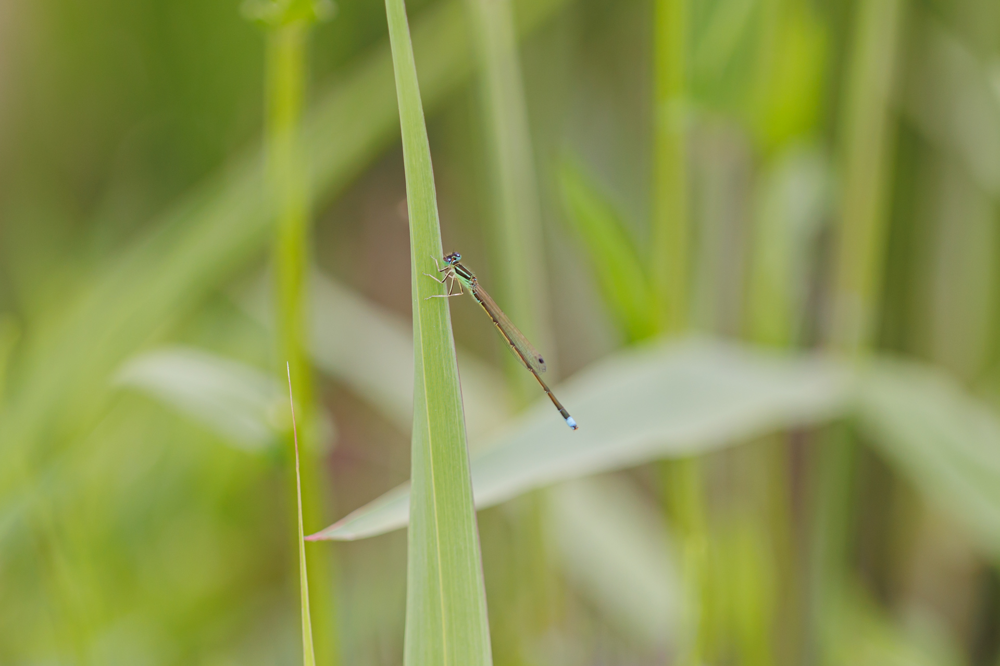

藪から棒に...
本日，ムカシトンボを見ることができず，満足感が得られなかったため，帰り道にトラフトンボがいるとされている池に立ち寄ってみた．トラフトンボは発見できず，シオカラトンボが二匹いただけだった．少し時間が遅かったのだろうか，それともまだいないのか分からない．ポイントを変えて池の周りを歩いているとヨシにアジアイトトンボが止まっていたのでカメラを構えようとした．すると，少し大きめのイトトンボが飛ぶ姿があった．近寄ってみると，まさかのホソミイトトンボだった．ホソミトトンボはこの周辺地域で目撃情報を聞いたことがなかったため非常に驚いた．ヨシから細身イトであった...

2022年5月3日 ホソミイトトンボ ♀ 埼玉県
Canon EOS R6, EF100mm F2.8L Macro IS USM, 1/80, F5.6, ISO 100
渓谷のサナエトンボ
春の代表的なトンボといえば...ムカシトンボである．いざ，渓流に向かう．散策を始めると岩場でサナエトンボが羽化をしている．ダビドサナエの羽化だった．羽化を目撃するのは春先の川が比較的多い印象．他にもトンボがいないか探してみると，ダビドサナエの羽化が他に二匹確認できた．羽化後はこちらを警戒して飛びたそうにしているが，すぐには飛び立てない様子だった．とても無防備だ．羽化後はヒラヒラと舞い上がり，日光の当たる木の葉の上に止まるようだ．トンボの撮影は父親と一緒に行っているが，ヒメクロサナエ（？）を見つけたとの報告があった．どうやら高い木の葉に止まっている．どうしようもないので，しばらく待っていたところ，二匹下に降りて来た．近寄ってみると，ヒメクロサナエの未成熟個体だった．そのうち一匹は羽が折れており，もう飛べそうにない．ところで，本日の目的のムカシトンボであるが，昼前くらいに一匹だけ目撃するも，すぐにどこかへ行ってしまい撮影することは叶わなかった．また，リベンジしたい．

2022年5月3日 ダビドサナエ ♀ 未成熟 埼玉県
Canon EOS R6, RF50mm F1.8L STM, 1/320, F3.5, ISO 100

2022年5月3日 ダビドサナエ ♂ 未成熟 埼玉県
Canon EOS R6, EF100mm F2.8L Macro IS USM, 1/640, F3.2, ISO 100

2022年5月3日 ヒメクロサナエ ♀ 未成熟 埼玉県
Canon EOS R6, EF100mm F2.8L Macro IS USM, 1/60, F2.8, ISO 100
2022年トンボ撮影始動
カメラを買い替えたこともあり，トンボ撮影に行きたいと思っていた．テスト撮影を兼ねて，近所の池を散策．一箇所目のポイントは残念ながら一匹もいなかったので，二箇所目の池に向かう．幸いにも，足元の草むらにアジアイトトンボとクロイトトンボがたくさんいた．まだ未成熟個体が多く，成熟した個体は少なかった．ゴールデンウィークくらいには成熟した個体に変わっているだろうか．

2022年4月24日 クロイトトンボ ♂ 未成熟 埼玉県
Canon EOS R6, EF100mm F2.8L Macro IS USM, 1/500, F2.8, ISO 100

2022年4月24日 アジアイトトンボ 埼玉県
Canon EOS R6, EF100mm F2.8L Macro IS USM, 1/500, F2.8, ISO 200